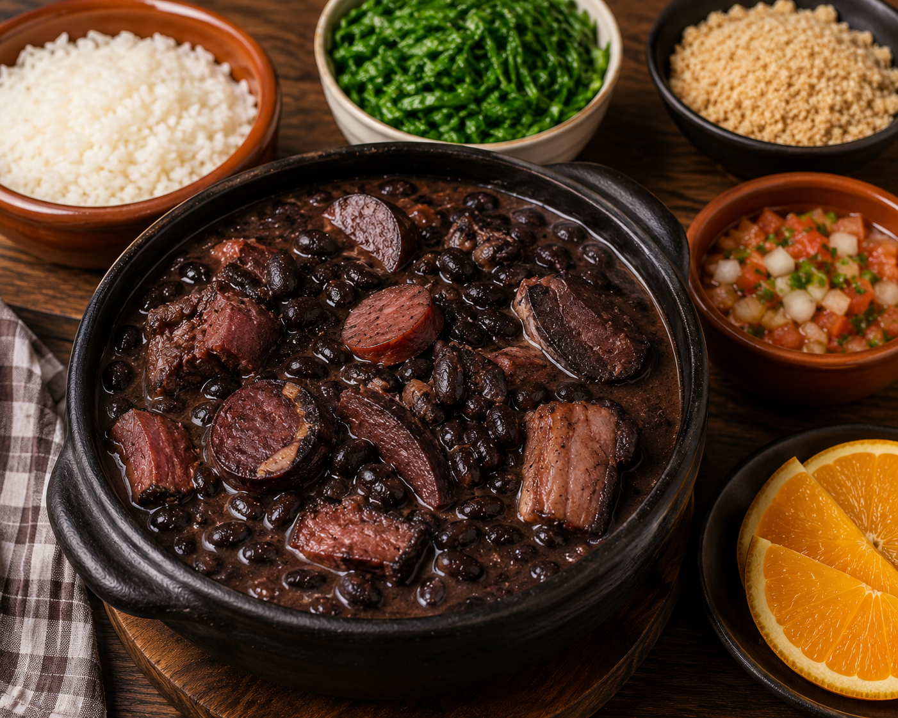

Receita de Feijoada

Ingrendientes:
- 500g de feijão preto
- 200g de carne-seca
- 200g de costelinha suína salgada
- 150g de paio, cortado em rodelas
- 150g de linguiça calabresa, cortada em rodelas
- 200g de lombo suíno, em cubos
- 100g de bacon, picado
- 1 cebola grande, picada
- 4 dentes de alho, picados
- 2 folhas de louro
- Sal a gosto
- Pimenta-do-reino a gosto
- Água suficiente para o cozimento
Modo de preparo:
- Coloque a carne-seca e a costelinha salgada de molho em água por pelo menos 12 horas, trocando a água algumas vezes para dessalgar.
- Lave o feijão preto e deixe de molho por cerca de 8 horas (opcional, mas ajuda no cozimento).
- Escorra as carnes dessalgadas e corte-as em pedaços médios.
- Em uma panela grande ou panela de pressão, frite o bacon até soltar gordura.
- Adicione a cebola e o alho, refogando até dourarem.
- Acrescente o lombo suíno, a linguiça calabresa e o paio, dourando levemente.
- Adicione a carne-seca e a costelinha, misturando bem.
- Coloque o feijão preto na panela e cubra tudo com água.
- Adicione as folhas de louro.
- Se estiver usando panela de pressão, cozinhe por cerca de 35 a 45 minutos após pegar pressão; em panela comum, cozinhe por 2 a 3 horas, mexendo ocasionalmente e adicionando água se necessário.
- Verifique se o feijão está macio e se as carnes estão bem cozidas.
- Ajuste o sal e a pimenta-do-reino com cuidado (as carnes já podem salgar bastante).
- Deixe cozinhar mais alguns minutos sem tampa para engrossar o caldo, se desejar.
- Sirva quente com arroz branco, farofa, couve refogada e fatias de laranja.
Home